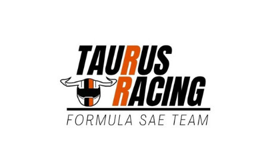
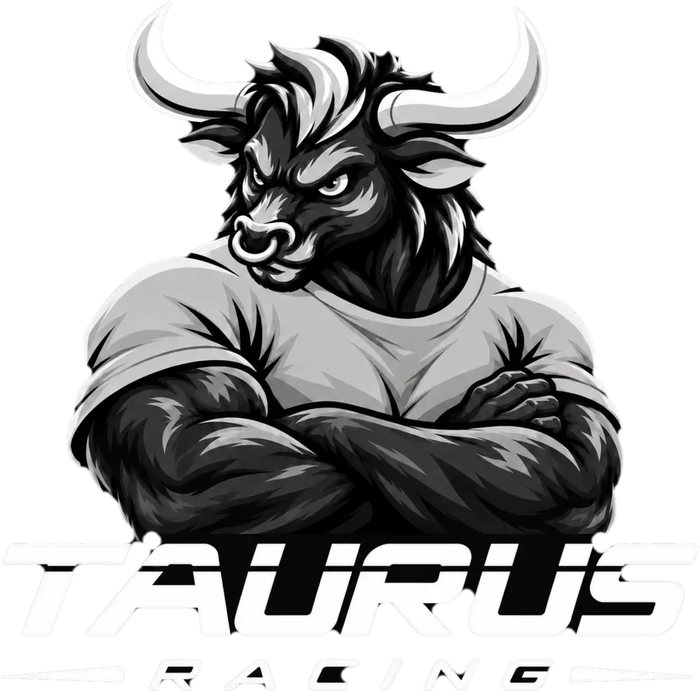

O nome
Taurus é a palavra latina para touro. O mascote dá rosto ao nome da equipe.
Mascote
Braços cruzados, camiseta laranja e cara de quem não sai do caminho. Ele aparece nas redes, nos eventos e aqui no site, sempre que alguma coisa pede uma explicação com menos formalidade.

Origem
Taurus é a palavra latina para touro. O mascote dá rosto ao nome da equipe.
A marca que a equipe usava na campanha de financiamento coletivo, encerrada em 2021, já trazia a cabeça de um touro. O mascote mantém esse símbolo e ganha corpo.
A pose em três quartos e os braços cruzados passam confiança e determinação. A camiseta tem o laranja da equipe, e o letreiro inclinado lembra as faixas de corrida.

Versões
Use a versão colorida sempre que der para reproduzir o laranja. A preto e branco serve para materiais em tons de cinza. Os arquivos têm fundo transparente.

As duas são ilustrações em alta resolução, não vetores. Para silk, bordado e impressão em uma cor, a equipe ainda vai preparar uma versão simplificada do desenho.
Guia de uso
Onde aparece
Capas, chamadas e o lançamento da coleção de camisetas.
Materiais de recepção, divulgação e adesivos.
Ele dá dicas na garagem 3D, no laboratório, no patrocínio e no processo seletivo.
Em propostas de parceria e documentos fica a assinatura simples. O mascote completa a identidade, sem precisar aparecer em toda peça.
Ilustração e conceito do mascote: Bruno Okushiro, case de marketing da Taurus Racing 2026/2027.